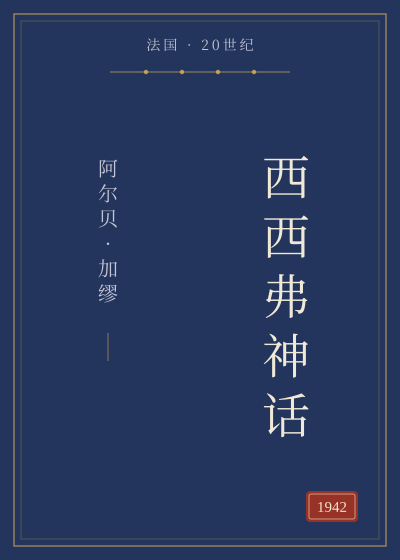
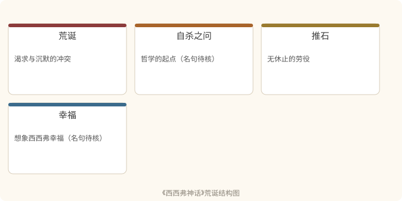

西西弗神话
一、基本信息
| 作者 | 加缪 |
|---|---|
| 成书/出版 | 1942年出版（作者页 B092 口径：西西弗神话（1942）） Albert Camus — Encyclopaedia Britannica（百科全书） |
| 国别/地区 | 法国 |
| 时代 | 现当代 · 20世纪 |
| 体裁 | 哲学随笔 |
| 语言 | 法语 |

《西西弗神话》荒诞结构图（主题·结构图）
二、创作背景
作者页（B092）：加缪 major_works 载'西西弗神话（1942）、反抗者（1951）、堕落（1956）'（B092 作者页定位，详见 juwairen/shuyi 条核对）。
主题（通说）：荒诞——人的意义渴求与世界的无理性沉默之间的冲突；'真正严肃的哲学问题只有一个：自杀'（开篇名句通说待核）。
三、内容脉络
荒诞与自杀→荒诞人→荒诞创作→西西弗的神话（章序通说待核）。
结尾：'应当想象西西弗是幸福的'（名句通说待核——Il faut imaginer Sisyphe heureux）。
四、主要人物表
| 人物 | 身份 | 说明 |
|---|---|---|
| 西西弗 | 神话人物 | 推石上山者 |
| 加缪 | 论者 | 荒诞的哲学 |
五、主题与艺术特点
- 荒诞：'自杀'作为哲学起点（名句待核）。
- 反抗：不寄望彼岸的坚持（通说）。
- 幸福与蔑视：'想象西西弗是幸福的'（名句待核）。
六、影响与评论
- 作者页：加缪哲学随笔谱系（B092 作者页口径）。
Albert Camus — Encyclopaedia Britannica（百科全书） - 存在主义与'荒诞哲学'的命名（通说待核——加缪本人拒绝该标签）。
Albert Camus — Encyclopaedia Britannica（百科全书）
七、阅读建议
难点
- 哲学论证的密度。
- 与《局外人》《鼠疫》的三部互文（通说待核——'荒诞三部曲'说）。
- 《西西弗神话》（上海译文出版社杜小真译本，通说待核）。
- 法文原版（Gallimard，公有领域渐近）。
先《局外人》后本作 →《反抗者》。
八、待核实
- 开篇名句原文核对。
- '荒诞三部曲'说待核。
- 杜小真译本信息核对。